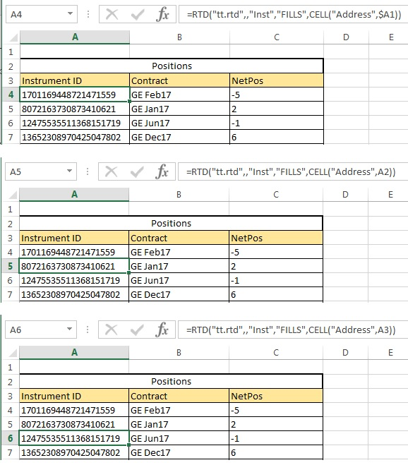
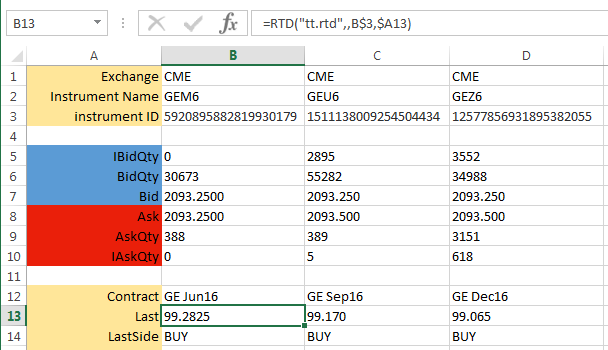
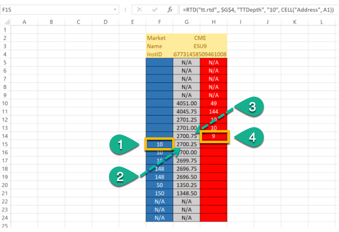
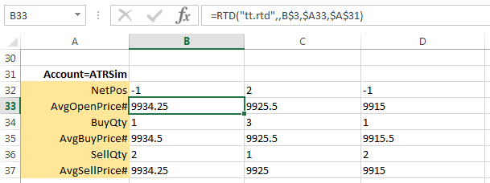

Retrieving instrument IDs
Before you can access information about an instrument, you must first extract its ID using one of the following methods:
By name method
=RTD("tt.rtd",,"Inst","exchangeName","instrName")
The instrName argument corresponds to what is commonly called the short name for the instrument.
For example, if you want to retrieve the ID for the Jun16 GE futures contract from the CME exchange, you need only enter the following formula in a cell.
=RTD("tt.rtd",,"Inst","CME","GEM6")
After processing the formula, Excel displays the result in the cell, similar to the following:

You can now use the result shown in the cell to identify the instrument in other formulas in the spreadsheet. Typically, you would reference the cell (B3, in this case) to identify the instrument in other formulas.
By instrument details method
=RTD("tt.rtd",,"Instr","exchangeName","instrSymbol","productType","expiry"")
Note: When using the instrument details method, use "Instr" instead of "Inst" in the formula.
TT supports the following product types (must be all-caps):
- FUTURE
- SPREAD
- OPTION
- STRATEGY
- BOND
- ENERGY
- STOCK
- INDEX
For example, if you want to retrieve the ID for the Jun19 ES futures contract from the CME exchange, you need would enter the following formula in a cell.
=RTD("tt.rtd",,"Instr","CME","ES","FUTURE","Jun19")
By fills method
You can use the following formula to retrieve the IDs for all instruments for which you have traded at least one contract:
=RTD("tt.rtd",,"Inst","FILLS",CELL("Address",cell-reference))
Note: The second parameter is the name of the external server running the RTD Server. As the TT RTD Server always runs locally, you must omit a value for the second parameter or supply an empty string (""). However, you must account for the parameter in the formula.
This formula returns a one dimensional vertical array of the instrument IDs. To display this entire array, you would specify this same formula in a series of cells in Excel where each has a different value for the cell-reference argument. An empty string will be returned if you reference a member of this array that has no value.
The cell-reference values take the form "column,row". For example:

You can now use the result shown in the cell to identify the instrument in other formulas in the spreadsheet. Typically, you would reference the cell to identify the instrument in other formulas.
Retrieving instrument properties
Once you have an instrument ID, you can use the following formula to retrieve properties associated with the instrument:
=RTD("tt.rtd",,inst-id,property,filter1,filterN)
The TT RTD Server supports two types of properties you can retrieve from TT:
- Type 1 properties return single values with no filtering support.
- Type 2 properties also return single values but allow you apply filters for the results.
Retrieving instrument properties: type 1
Type 1 properties for an instrument are those which return a single value and have no optional filters. They can be extracted with an RTD formula of the form:
=RTD("tt.rtd",,inst-id,property)
For example, if you stored the string "Last" in cell A13 and the instrument ID in cell B3, you could extract the last traded price in TT display format as follows:
=RTD("tt.rtd",,B3,A13)
After processing the formula, Excel displays the result in the cell, similar to the following. Note that the "$" in the cell references are Excel mixed reference notations.

Retrieving market depth
RTD also provides properties that return market depth (TTDepth) and detailed depth (TTDetailedDepth). The depth quantities combine direct and implied quantities at each price level. These properties can be retrieved using formulas in the following form:
=RTD("tt.rtd",,inst-id,depth-property,num-levels,cell-reference)
Note: The second parameter is the name of the external server running the RTD Server. As the TT RTD Server always runs locally, you must omit a value for the second parameter or supply an empty string (“”). However, you must account for the parameter in the formula.
The TTDepth property returns a 4xnum-levels in-memory array, as follows:
- A1..Anum-levels : Bid quantity at each level
- B1..Bnum-levels : Bid price at each level
- C1..Cnum-levels : Ask price at each level
- D1..Dnum-levels : Ask quantity at each level
The TTDetailedDepth property returns a 6xnum-levels in-memory array, as follows:
- A1..Anum-levels : Bid quantity at each level
- B1..Bnum-levels : Bid price at each level
- C1..Cnum-levels : Ask price t each level
- D1..Dnum-levels : Ask quantity at each level
- E1..Enum-levels : Bid counterparty ID at each level
- F1..Fnum-levels : Ask counterparty ID at each level
Note: For detailed depth, no counterparty IDs are returned for implied orders.
For example, to return ten levels of market depth for an instrument ID stored in cell G4, you can extract the depth as follows:
=RTD("tt.rtd",, $G$4, "TTDepth", "10", CELL("Address", A1)")
After processing the formula, Excel can be configured to display the results similar to the following market ladder.

- CELL("Address",A1)
- CELL("Address",B1)
- CELL("Address",C1)
- CELL("Address",D1)
The num-levels parameter indicates the size of the array to return, not necessarily the number of price levels.
- For market depth (depth-property = TTDepth), the formula returns the first num-levels price levels on each side of the market that contain order quantities. Price levels with no direct or implied quantities are skipped.
-
For detailed depth (depth-property = TTDetailedDepth), the formula the first num-levels orders on each side of the market, irrespective of price levels. If a price level contains both direct and implied quantities, the individual direct quantities are returned first, followed by the aggregated implied quantity. The implied quantity is appended with an asterisk (*).
Based on the requested num-levels, the results for detailed depth might return orders at one or more price levels and might return only a subset of orders at the outer price level. For example, suppose you specify 5 levels and the Buy side contains three orders (1 direct and 2 implied) at the first price level (100) and six orders (4 direct and 2 implied) and at the next price level (99). The returned array would include something similar to the following:
- 2 at 100 (first order)
- 4* at 100 (aggregated implied quantity for two orders at this price level)
- 50 at 99 (first order at new price level)
- 10 at 99 (second order at this level)
- 5 at 99 (third order at this level)
Retrieving instrument properties: type 2
Type 2 properties for an instrument are those which return a single value and have optional filters. They can be extracted with an RTD formula of the form:
=RTD("tt.rtd",,inst-id,property,filter1,filter2,filterN)
You can use the Account attribute as a filter to limit the fills for which the TT RTD Server calculates values. For example, you might want the quantity of sell orders (SellQty property) of an instrument only if it was submitted through a specific account (Account attribute).
Note: As noted, you must specify at least one Account filter for some type 2 properties.
The format for a filter parameter in the formula is:
<property><operator><value>
For example, if you stored the string "AvgOpenPrice#" in cell A33, the string "Account=ATRSim" in cell A31, and the instrument ID in cell B3, you could extract the average open price in decimal as follows:
=RTD("tt.rtd",,B3,A33,A31)
After processing the formula, Excel displays the result in the cell, similar to the following. Note that the "$" in the cell references are Excel mixed reference notations.
